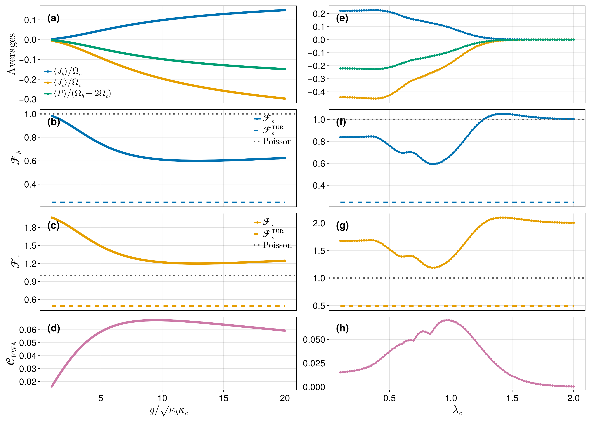

Circuit-QED quantum heat engine
A voltage-biased Josephson junction couples a hot and a cold microwave mode. Each Cooper pair tunnelling across the junction converts its electrostatic energy $2eV$ into photons, and tuning the bias to
\[2eV = l_h \Omega_h - l_c \Omega_c\]
selects which photon-exchange process is resonant. This example uses $l_h = 1,\ l_c = 2$: one hot photon in, two cold photons out. In the rotating-wave approximation,
\[H = -\frac{E_J}{2}\left[\, i^{\,l_h+l_c}\, (a_c^\dagger)^{l_c}\, A_h(l_h)\, A_c(l_c)\, a_h^{l_h} + \text{h.c.} \right], \qquad E_J = \frac{2g}{(2\lambda_h)^{l_h}(2\lambda_c)^{l_c}},\]
where the $A_\alpha$ are diagonal Laguerre operators carrying the junction's nonlinear matrix elements and $g$ is the effective photon–photon coupling. Each mode is damped by its own thermal bath, giving four jump operators — emission into and absorption from each bath:
\[J = \Big[\sqrt{(\bar n_h+1)\kappa_h}\,a_h,\quad \sqrt{(\bar n_c+1)\kappa_c}\,a_c,\quad \sqrt{\bar n_h \kappa_h}\,a_h^\dagger,\quad \sqrt{\bar n_c \kappa_c}\,a_c^\dagger\Big].\]
We monitor two currents — the heat flowing into the hot bath and into the cold bath — and compute the first two cumulants of each: the mean currents $\langle J_\alpha\rangle$ and their noise $\langle\langle J_\alpha^2\rangle\rangle$. From these follow the Fano factors, the entropy production, and the thermodynamic-uncertainty-relation (TUR) product.
Both heat currents live on the same Liouvillian and the same steady state. Only the monitored jumps and their weights differ. The Drazin solver depends on neither, so it can be prepared once and reused — which is exactly what prepare_fcs_context is for. This page is the worked example of the pattern described under Reusing a prepared solver across observables.
This page is a self-contained condensation of the companion notebook circuit_qed_heat_engine.ipynb, which reproduces Figs. 3 and 4 of the manuscript.
Setup and parameters
using QuantumToolbox
using QuantumFCS
using Krylov, IncompleteLU # enables the iterative backend
using SparseArrays, LinearAlgebra, Printf
params = (
Nmax_h = 7, Nmax_c = 7, # Fock cutoffs: Hilbert dimension (Nmax_h+1)(Nmax_c+1)
lh = 1, lc = 2, # one hot photon in, two cold photons out
λh = 0.47, λc = 0.89, # junction coupling parameters
Ωc = 1000.0, Ωratio = π, # cold-mode frequency and Ω_h/Ω_c
κh = 2.0, κc = 0.5, # bath couplings
nh = 0.5, nc = 0.01, # thermal occupations
g = 12.841683366733466, # effective photon-photon coupling
)These are the operating parameters of the large-affinity regime, where the engine turns out to be antibunched.
Building the model
The Laguerre operators are diagonal in the Fock basis, with matrix elements
\[\langle n | A_\alpha(k) | n \rangle = (2\lambda)^k e^{-2\lambda^2}\, \frac{n!}{(n+k)!}\, L_n^{(k)}(4\lambda^2),\]
where $L_n^{(k)}$ is a generalized Laguerre polynomial. Evaluating it with the standard three-term recurrence
\[(n+1)\,L_{n+1}^{(\alpha)}(x) = (2n+1+\alpha-x)\,L_n^{(\alpha)}(x) - (n+\alpha)\,L_{n-1}^{(\alpha)}(x)\]
keeps this page dependency-free; the companion notebook instead evaluates the same polynomial through the confluent hypergeometric function pFq from HypergeometricFunctions.jl, and the two agree to machine precision. Note also that $n!/(n+k)!$ is written as $1/\prod_{j=n+1}^{n+k} j$ rather than as a ratio of factorials, which would overflow well before the cutoffs used in the finite-affinity regime.
# Generalized Laguerre polynomial L_n^{(α)}(x), three-term recurrence.
function laguerre(n::Integer, α::Real, x::Real)
n == 0 && return 1.0
Lm1, L = 1.0, 1 + α - x
for k in 1:(n - 1)
Lm1, L = L, ((2k + 1 + α - x) * L - (k + α) * Lm1) / (k + 1)
end
return L
end
# ⟨n| A_α(k) |n⟩: the junction matrix element for a k-photon process.
laguerre_element(n, k, λ) =
(2λ)^k * exp(-2λ^2) * laguerre(n, k, 4λ^2) / prod(n+1:n+k)
laguerre_operator(λ, k, N) = QuantumObject(
spdiagm(0 => ComplexF64[laguerre_element(n, k, λ) for n in 0:(N - 1)]);
type = Operator, dims = (N,))
function qhe_model(p)
Nh, Nc = p.Nmax_h + 1, p.Nmax_c + 1
ah = tensor(destroy(Nh), qeye(Nc))
ac = tensor(qeye(Nh), destroy(Nc))
Ej = 2 * p.g / ((2p.λh)^p.lh * (2p.λc)^p.lc)
A = tensor(laguerre_operator(p.λh, p.lh, Nh),
laguerre_operator(p.λc, p.lc, Nc))
H = -Ej / 2 * (im^(p.lh + p.lc) * (ac')^p.lc * A * ah^p.lh)
H = H + H'
J = [sqrt((p.nh + 1) * p.κh) * ah, # emission into the hot bath
sqrt((p.nc + 1) * p.κc) * ac, # emission into the cold bath
sqrt(p.nh * p.κh) * ah', # absorption from the hot bath
sqrt(p.nc * p.κc) * ac'] # absorption from the cold bath
return (; H, J, ah, ac, Ej, dims = (Nh, Nc))
end
model = qhe_model(params)
Ωh = params.Ωratio * params.Ωc
@printf("Hilbert space: %d x %d = %d (Liouvillian %d x %d)\n",
params.Nmax_h + 1, params.Nmax_c + 1, prod(model.dims),
prod(model.dims)^2, prod(model.dims)^2)
@printf("Ω_h = %.2f, Ω_c = %.2f, resonance 2eV = Ω_h - 2Ω_c = %.2f\n",
Ωh, params.Ωc, Ωh - 2 * params.Ωc)
@printf("g = %.4f -> E_J = %.4f\n", params.g, model.Ej)
@printf("%d jump operators (hot/cold emission and absorption)\n", length(model.J))Hilbert space: 8 x 8 = 64 (Liouvillian 4096 x 4096)
Ω_h = 3141.59, Ω_c = 1000.00, resonance 2eV = Ω_h - 2Ω_c = 1141.59
g = 12.8417 -> E_J = 8.6235
4 jump operators (hot/cold emission and absorption)Two currents, one factorization
This is the part of the API worth seeing. Both heat currents are built from the same four jump operators, weighted by the photon energy they carry:
- hot current: jumps
[J₁, J₃](emission into / absorption from the hot bath) with weights[-Ω_h, +Ω_h]; - cold current: jumps
[J₂, J₄]with weights[-Ω_c, +Ω_c].
The sign convention makes $\langle J_\alpha\rangle$ the heat flowing into bath $\alpha$. Since the two currents differ only in mJ and nu, we prepare the Drazin solver once with prepare_fcs_context and call fcscumulants_recursive on that context for each current. Passing the TraceConstrainedSteadyState straight into prepare_fcs_context also hands over the preconditioner built during the steady-state solve, so the whole point costs a single factorization no matter how many currents we ask for.
L = liouvillian(model.H, model.J)
# Steady state: returns rho_ss *and* the ILU factorization built to get it.
ss = trace_constrained_steadystate(L;
method = :iterative,
τ = 1e-3, # ILU drop tolerance
shift_factor = 1e-6, # diagonal shift keeping the factorization stable
rtol = 1e-10, atol = 1e-14, itmax = 200, memory = 60)
# Prepare the Drazin solver once; `ss.Pl` is carried over, so no second ILU.
ctx = prepare_fcs_context(ss; method = :iterative,
τ = 0.05, rtol = 1e-8, itmax = 300, memory = 60)
# Same context, two different monitored currents.
hot = fcscumulants_recursive(ctx; mJ = [model.J[1], model.J[3]],
nu = [-Ωh, Ωh], nC = 2)
cold = fcscumulants_recursive(ctx; mJ = [model.J[2], model.J[4]],
nu = [-params.Ωc, params.Ωc], nC = 2)
Jh, Dh = real(hot[1]), real(hot[2])
Jc, Dc = real(cold[1]), real(cold[2])
@printf("hot : ⟨J_h⟩ = %12.6g ⟨⟨J_h²⟩⟩ = %12.6g\n", Jh, Dh)
@printf("cold: ⟨J_c⟩ = %12.6g ⟨⟨J_c²⟩⟩ = %12.6g\n", Jc, Dc)
@printf("steady state converged in %d iterations (ILU %.2f s, GMRES %.2f s)\n",
ss.stats.iterations, ss.stats.ilu_seconds, ss.stats.gmres_seconds)hot : ⟨J_h⟩ = 369.612 ⟨⟨J_h²⟩⟩ = 696376
cold: ⟨J_c⟩ = -235.302 ⟨⟨J_c²⟩⟩ = 282231
steady state converged in 3 iterations (ILU 0.01 s, GMRES 1.04 s)Heat flows in from the hot bath and out into the cold one, as the signs show. Adding a third or fourth monitored current here would cost two more GMRES solves each and no additional factorization at all.
Consistency checks
Two identities must hold, and both are checked at every point of the sweeps below.
Tight coupling. Because every tunnelling event moves exactly $l_h$ hot and $l_c$ cold photons, the two heat currents are rigidly locked:
\[l_c \Omega_c \langle J_h\rangle + l_h \Omega_h \langle J_c\rangle = 0 .\]
Current identity. The first FCS cumulant must equal the current computed directly from the steady state as a weighted sum of jump rates,
\[c_1 = \sum_k \nu_k \,\langle J_k^\dagger J_k\rangle ,\]
an independent route to the same number that exercises none of the Drazin machinery.
ρss = QuantumObject(ss.rho_ss; type = Operator, dims = model.dims)
# The current straight from the steady state: Σ_k ν_k ⟨J_k† J_k⟩.
jump_current(ρ, jumps, weights) =
sum(real(weights[k] * expect(jumps[k]' * jumps[k], ρ)) for k in eachindex(jumps))
hot_direct = jump_current(ρss, [model.J[1], model.J[3]], [-Ωh, Ωh])
cold_direct = jump_current(ρss, [model.J[2], model.J[4]], [-params.Ωc, params.Ωc])
tight_coupling_error =
abs(params.lc * params.Ωc * Jh + params.lh * Ωh * Jc) /
max(abs(params.lc * params.Ωc * Jh), abs(params.lh * Ωh * Jc), eps())
@printf("tight coupling l_c Ω_c ⟨J_h⟩ + l_h Ω_h ⟨J_c⟩ = 0 -> rel. error %.2e\n",
tight_coupling_error)
@printf("hot current identity c₁/direct − 1 = %.2e\n", Jh / hot_direct - 1)
@printf("cold current identity c₁/direct − 1 = %.2e\n", Jc / cold_direct - 1)tight coupling l_c Ω_c ⟨J_h⟩ + l_h Ω_h ⟨J_c⟩ = 0 -> rel. error 6.67e-10
hot current identity c₁/direct − 1 = 3.33e-15
cold current identity c₁/direct − 1 = -3.33e-16Thermodynamics: affinity, Fano factors, and the TUR
The thermodynamic force driving the engine is the affinity
\[\mathcal{A} = \frac{1}{l_h}\ln\!\left(\frac{1}{\bar n_c}+1\right) - \frac{1}{l_c}\ln\!\left(\frac{1}{\bar n_h}+1\right),\]
which sets the entropy production associated with each current,
\[\sigma_h = l_c \frac{\langle J_h\rangle}{\Omega_h}\,\mathcal{A}, \qquad \sigma_c = -l_h \frac{\langle J_c\rangle}{\Omega_c}\,\mathcal{A} .\]
The thermodynamic uncertainty relation states that the uncertainty product obeys
\[Q_\alpha = \frac{\langle\langle J_\alpha^2\rangle\rangle}{\langle J_\alpha\rangle^2}\, \sigma_\alpha \;\ge\; 2 .\]
Rewriting it as a bound on the Fano factor $\mathcal{F}_\alpha = |\langle\langle J_\alpha^2\rangle\rangle / (\Omega_\alpha \langle J_\alpha\rangle)|$ gives a threshold
\[\mathcal{F}_h^{\mathrm{TUR}} = \frac{2}{l_c \mathcal{A}}, \qquad \mathcal{F}_c^{\mathrm{TUR}} = \frac{2}{l_h \mathcal{A}} .\]
Here is the point of the large-affinity regime: that threshold drops well below the Poisson value 1, so an engine can be strongly sub-Poissonian — antibunched — and still respect the TUR.
𝒜 = log(1 / params.nc + 1) / params.lh - log(1 / params.nh + 1) / params.lc
σh = params.lc * (Jh / Ωh) * 𝒜
σc = -params.lh * (Jc / params.Ωc) * 𝒜
Fh = abs(Dh / (Ωh * Jh))
Fc = abs(Dc / (params.Ωc * Jc))
Qh = (Dh / Jh^2) * σh
Qc = (Dc / Jc^2) * σc
Fh_TUR = 2 / (params.lc * 𝒜)
Fc_TUR = 2 / (params.lh * 𝒜)
P_drive = Jh + Jc
@printf("affinity 𝒜 = %.4f\n", 𝒜)
@printf("hot Fano ℱ_h = %.4f TUR threshold ℱ_h^TUR = %.4f\n", Fh, Fh_TUR)
@printf("cold Fano ℱ_c = %.4f TUR threshold ℱ_c^TUR = %.4f\n", Fc, Fc_TUR)
@printf("uncertainty Q_h = %.4f, Q_c = %.4f (TUR bound: 2)\n", Qh, Qc)
@printf("output power ⟨P⟩ = %.6g\n", P_drive)
if Fh < 1 && Qh > 2
println("\n→ sub-Poissonian (ℱ_h < 1) yet Q_h > 2: antibunching without a TUR violation.")
endaffinity 𝒜 = 4.0658
hot Fano ℱ_h = 0.5997 TUR threshold ℱ_h^TUR = 0.2460
cold Fano ℱ_c = 1.1994 TUR threshold ℱ_c^TUR = 0.4919
uncertainty Q_h = 4.8767, Q_c = 4.8767 (TUR bound: 2)
output power ⟨P⟩ = 134.31
→ sub-Poissonian (ℱ_h < 1) yet Q_h > 2: antibunching without a TUR violation.The hot current is sub-Poissonian at $\mathcal{F}_h \approx 0.60$ while its TUR threshold sits at $0.246$: there is a factor of $\sim\!2.4$ of room. Note that $Q_h = Q_c$ exactly — a consequence of tight coupling, which makes the two currents proportional and their uncertainty products identical.
Sweeping parameters
Everything above, packaged for one parameter set, so a sweep is a map over it. Each point rebuilds the Liouvillian and hence needs its own factorization — but within a point, the steady state and both currents still share it.
function qhe_point(p)
m = qhe_model(p)
Ωh = p.Ωratio * p.Ωc
ss = trace_constrained_steadystate(liouvillian(m.H, m.J);
method = :iterative, τ = 1e-3, shift_factor = 1e-6,
rtol = 1e-10, atol = 1e-14, itmax = 200, memory = 60)
ctx = prepare_fcs_context(ss; method = :iterative,
τ = 0.05, rtol = 1e-8, itmax = 300, memory = 60)
hot = fcscumulants_recursive(ctx; mJ = [m.J[1], m.J[3]], nu = [-Ωh, Ωh], nC = 2)
cold = fcscumulants_recursive(ctx; mJ = [m.J[2], m.J[4]], nu = [-p.Ωc, p.Ωc], nC = 2)
Jh, Dh = real(hot[1]), real(hot[2])
Jc, Dc = real(cold[1]), real(cold[2])
𝒜 = log(1 / p.nc + 1) / p.lh - log(1 / p.nh + 1) / p.lc
σh = p.lc * (Jh / Ωh) * 𝒜
σc = -p.lh * (Jc / p.Ωc) * 𝒜
ρss = QuantumObject(ss.rho_ss; type = Operator, dims = m.dims)
return (; p.g, p.λc, Ej = m.Ej, Jh, Dh, Jc, Dc, 𝒜,
Fh = abs(Dh / (Ωh * Jh)), Fc = abs(Dc / (p.Ωc * Jc)),
Qh = (Dh / Jh^2) * σh, Qc = (Dc / Jc^2) * σc,
Fh_TUR = 2 / (p.lc * 𝒜), Fc_TUR = 2 / (p.lh * 𝒜),
P_drive = Jh + Jc,
diagnostics(ρss, m, p, Ωh, Jh, Jc)...)
endThe diagnostics recorded alongside every point are what makes the sweep auditable — the truncation tails, the occupation fractions, the tight-coupling error, and $\varepsilon_{\text{off}}$, the size of the off-resonant terms the RWA discards relative to their detuning $\delta = |(\Omega_h/\Omega_c - 3)\Omega_c|$:
function diagnostics(ρss, m, p, Ωh, Jh, Jc)
hot_pop = max.(real.(diag(ptrace(ρss, 1).data)), 0.0); hot_pop ./= sum(hot_pop)
cold_pop = max.(real.(diag(ptrace(ρss, 2).data)), 0.0); cold_pop ./= sum(cold_pop)
# Off-resonant terms the RWA discards, relative to their detuning.
δ = abs((p.Ωratio - 3) * p.Ωc)
A0 = tensor(laguerre_operator(p.λh, 0, p.Nmax_h + 1),
laguerre_operator(p.λc, 1, p.Nmax_c + 1))
F = -m.Ej / 2 * (im * m.ac * A0)
ε_off = sqrt(max(real(expect(F * F' + F' * F, ρss)), 0.0)) / δ
return (; hot_tail = sum(hot_pop[end-1:end]),
cold_tail = sum(cold_pop[end-1:end]),
hot_occupation = sum((0:p.Nmax_h) .* hot_pop) / p.Nmax_h,
cold_occupation = sum((0:p.Nmax_c) .* cold_pop) / p.Nmax_c,
ε_off,
tight_coupling_error =
abs(p.lc * p.Ωc * Jh + p.lh * Ωh * Jc) /
max(abs(p.lc * p.Ωc * Jh), abs(p.lh * Ωh * Jc), eps()))
endTwo sweeps at fixed bath parameters: one over the coupling $g$ at $\lambda_c = 0.89$, one over $\lambda_c$ at the selected $g$. The $\lambda_c$ sweep needs a slightly larger cold cutoff. At 64 dimensions a point costs tens of milliseconds, so both sweeps finish in well under a minute.
# Wrapped in a function: keeps the loop type-stable and lets a sweep be rerun.
function qhe_sweep(base, values, setter; label = "sweep", progress_every = 50)
rows = NamedTuple[]
t0 = time_ns()
for (i, v) in enumerate(values)
pt = qhe_point(merge(base, setter(v)))
push!(rows, pt)
if i == 1 || i == length(values) || i % progress_every == 0
@printf("%-12s %3d/%3d x=%7.4f | ℱ_h=%7.4f ℱ_c=%7.4f Q_h=%7.3f | tails %.1e/%.1e | %5.1fs\n",
label, i, length(values), v, pt.Fh, pt.Fc, pt.Qh,
pt.hot_tail, pt.cold_tail, (time_ns() - t0) / 1e9)
end
end
return rows
end
sweep_g = qhe_sweep(params, LinRange(1.0, 20.0, 200), v -> (; g = v);
label = "g sweep", progress_every = 40)
sweep_λc = qhe_sweep(merge(params, (; Nmax_c = 10)), LinRange(0.1, 2.0, 60),
v -> (; λc = v); label = "λc sweep", progress_every = 12)
best = sweep_g[argmin(r.Fh for r in sweep_g)]
@printf("\nmin ℱ_h over the g sweep: %.4f at g = %.3f (TUR threshold %.4f)\n",
best.Fh, best.g, best.Fh_TUR)g sweep 1/200 x= 1.0000 | ℱ_h= 0.9825 ℱ_c= 1.9651 Q_h= 7.990 | tails 1.2e-03/2.7e-10 | 0.7s
g sweep 40/200 x= 4.7236 | ℱ_h= 0.7598 ℱ_c= 1.5196 Q_h= 6.178 | tails 1.2e-03/2.2e-07 | 3.9s
g sweep 80/200 x= 8.5427 | ℱ_h= 0.6274 ℱ_c= 1.2549 Q_h= 5.102 | tails 1.1e-03/3.3e-06 | 6.6s
g sweep 120/200 x=12.3618 | ℱ_h= 0.5999 ℱ_c= 1.1999 Q_h= 4.878 | tails 1.0e-03/1.6e-05 | 8.9s
g sweep 160/200 x=16.1809 | ℱ_h= 0.6069 ℱ_c= 1.2139 Q_h= 4.935 | tails 1.0e-03/4.4e-05 | 11.4s
g sweep 200/200 x=20.0000 | ℱ_h= 0.6234 ℱ_c= 1.2468 Q_h= 5.069 | tails 9.9e-04/9.4e-05 | 14.0s
λc sweep 1/ 60 x= 0.1000 | ℱ_h= 0.8384 ℱ_c= 1.6769 Q_h= 6.818 | tails 7.8e-04/7.6e-04 | 0.4s
λc sweep 12/ 60 x= 0.4542 | ℱ_h= 0.7993 ℱ_c= 1.5985 Q_h= 6.499 | tails 8.4e-04/9.9e-06 | 2.9s
λc sweep 24/ 60 x= 0.8407 | ℱ_h= 0.5949 ℱ_c= 1.1898 Q_h= 4.838 | tails 1.0e-03/3.9e-08 | 4.5s
λc sweep 36/ 60 x= 1.2271 | ℱ_h= 0.9638 ℱ_c= 1.9276 Q_h= 7.837 | tails 1.2e-03/2.9e-11 | 6.1s
λc sweep 48/ 60 x= 1.6136 | ℱ_h= 1.0285 ℱ_c= 2.0570 Q_h= 8.363 | tails 1.2e-03/2.9e-14 | 8.1s
λc sweep 60/ 60 x= 2.0000 | ℱ_h= 1.0027 ℱ_c= 2.0051 Q_h= 8.153 | tails 1.2e-03/1.3e-16 | 8.9s
min ℱ_h over the g sweep: 0.5997 at g = 12.839 (TUR threshold 0.2460)The hot Fano factor dips to $\approx 0.60$ — clearly sub-Poissonian — while its TUR threshold sits near $0.25$. The engine is antibunched with room to spare above the bound, and the sweep locates the optimum at the $g$ used for the manuscript's operating point.
Validation
The RWA and the Fock truncation both have to be checked before the physics can be believed.
function validation_summary(rows, xs, label; ε_tol = 0.05)
ok = [r.ε_off < ε_tol for r in rows]
@printf("%-9s | %3d/%3d points satisfy ε_off < %.2f | ε_off ∈ [%.1e, %.1e]\n",
label, count(ok), length(rows), ε_tol,
minimum(r.ε_off for r in rows), maximum(r.ε_off for r in rows))
@printf(" | tails: hot ≤ %.1e, cold ≤ %.1e | tight coupling ≤ %.1e\n",
maximum(r.hot_tail for r in rows), maximum(r.cold_tail for r in rows),
maximum(r.tight_coupling_error for r in rows))
all(ok) || @printf(" | RWA marginal for x ∈ [%.3f, %.3f]\n",
minimum(xs[.!ok]), maximum(xs[.!ok]))
end
validation_summary(sweep_g, [r.g for r in sweep_g], "g sweep")
validation_summary(sweep_λc, [r.λc for r in sweep_λc], "λc sweep")g sweep | 200/200 points satisfy ε_off < 0.05 | ε_off ∈ [2.7e-04, 6.6e-03]
| tails: hot ≤ 1.2e-03, cold ≤ 9.4e-05 | tight coupling ≤ 2.0e-08
λc sweep | 52/ 60 points satisfy ε_off < 0.05 | ε_off ∈ [3.5e-05, 4.2e-01]
| tails: hot ≤ 1.2e-03, cold ≤ 8.2e-04 | tight coupling ≤ 7.3e-06
| RWA marginal for x ∈ [0.100, 0.325]The $g$ sweep is clean throughout: $\varepsilon_{\text{off}}$ stays below $10^{-2}$ at every point, truncation tails are at the $10^{-3}$ level, and tight coupling holds to $\sim\!10^{-8}$.
The $\lambda_c$ sweep is only trustworthy above $\lambda_c \approx 0.33$. This is not a numerical problem but a physical one: holding $g$ fixed while shrinking $\lambda_c$ requires $E_J = g/(4\lambda_h\lambda_c^2)$ to grow without bound, so the off-resonant terms the RWA discards stop being small. The cutoffs remain perfectly adequate there — it is the model, not the solver, that degrades. The operating point used above, $\lambda_c = 0.89$, sits comfortably inside the valid region.
Cutoff convergence
The Fock cutoffs here are fixed rather than scheduled (unlike the Jaynes–Cummings example), so they need justifying. Recompute one point on a ladder of cutoffs and watch the relative change from one rung to the next:
function cutoff_convergence(base, cutoffs)
prev = nothing
println(" Nmax_h Nmax_c J_h ℱ_h ℱ_c ΔJ_h/J_h Δℱ_h/ℱ_h hot tail cold tail")
for (Nh, Nc) in cutoffs
r = qhe_point(merge(base, (; Nmax_h = Nh, Nmax_c = Nc)))
dJ = prev === nothing ? NaN : abs(r.Jh / prev.Jh - 1)
dF = prev === nothing ? NaN : abs(r.Fh / prev.Fh - 1)
@printf("%7d %7d %10.6g %10.6f %10.6f %10.1e %10.1e %10.1e %10.1e\n",
Nh, Nc, r.Jh, r.Fh, r.Fc, dJ, dF, r.hot_tail, r.cold_tail)
prev = r
end
end
cutoff_convergence(params, [(5, 5), (7, 7), (9, 9), (11, 11)]) Nmax_h Nmax_c J_h ℱ_h ℱ_c ΔJ_h/J_h Δℱ_h/ℱ_h hot tail cold tail
5 5 369.354 0.597924 1.195848 NaN NaN 9.2e-03 6.2e-03
7 7 369.612 0.599720 1.199439 7.0e-04 3.0e-03 1.0e-03 1.8e-05
9 9 369.569 0.599676 1.199353 1.1e-04 7.2e-05 1.2e-04 2.5e-07
11 11 369.565 0.599677 1.199353 1.3e-05 4.2e-07 1.3e-05 1.2e-09The changes fall by orders of magnitude as the cutoff grows, and the production cutoff $N_{\max} = 7$ already sits in the converged region: going to $11$ changes $\mathcal{F}_h$ in the fifth decimal, far below anything the figures claim.
The manuscript figure

The published figure runs the two sweeps above at full resolution and shows the scaled heat currents and output power (a, e), the hot and cold Fano factors against their TUR thresholds and the Poisson line (b, c, f, g), and the RWA coherence (d, h).
A second regime, not reproduced here, lowers the affinity by warming the cold bath ($\bar n_h = 2.5$, $\bar n_c = 1.5$). That raises the TUR thresholds far above 1 and lets the engine be pushed close to the bound $Q \approx 2$ — near-reversible operation with small currents. It needs much larger cutoffs ($N_{\max,h} = 20$, $N_{\max,c} = 25$, a 546-dimensional Hilbert space), which is where the iterative backend starts to matter for this model too. Both regimes, the figure routines, and the checked-in sweep data live in the companion repository QuantumFCS-Notebooks.
See also
- Driven-dissipative Jaynes–Cummings model — one current, but a Liouvillian four orders of magnitude larger, with preconditioner reuse carried across a parameter sweep.
- Reusing a prepared solver across observables — the general form of the multi-current pattern used here.